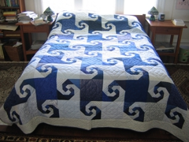
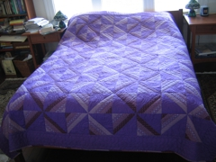
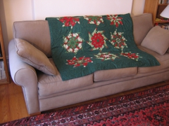
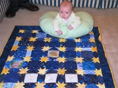
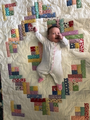
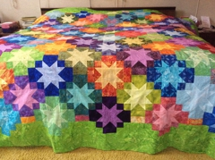

|
 Snail's Trail This blue and white quilt is in the traditional snail's trail pattern and was chosen for my son and daughter in law when they married. We all like Escher and this is an example of a tesselation. It was my first experiment with paper piecing and proved to me that it was better that way. I tried samples both with and without paper and though I thought I could do well without it I liked the result better with it. So far four quilts have been made with this collection of fabrics and a fifth is in progress. |
 An early experiment This purple quilt is a very early experiment and learning project with rotary cutting before it became common. |
|
 Christmas quilt The Christmas quilt is an example of creative problem solving. It started out as a project for two tree skirts with a free pattern, using stack and whack technique, from Hancock Fabrics. The poinsettia fabric was flawed so the number of blocks I was able to make from the good part determined what I would do. It became a small quilt. That year stack and whack was such fun that I made about seven different ones from Thanksgiving to Christmas. It is addictive but I'm cured. Other projects diverted me. |
 Starring Amelia With help from Grampy Ray, I made Amelia a new quilt for Christmas. It is called "Starring Amelia" and is made of star motif fabrics. Many family members' pictures and Amelia's birth information are underneath four pointed squares. She can open the squares to see the pictures and play peek-a-boo! Some of them are pinned open for you to see inside. |
|
 Josie's Log Cabin This quilt, a log cabin pattern, was made for our newest grand daughter, Josie Laura. The fabrics are traditional, unbleached muslin and depression era reproductions. The quilting was a new experiment in that I used the same design for quilting in the muslin of the blocks as was used in the border, a new idea for me. |
 Batik Stars This, shown here before quilting, is my current favorite. I tend to be a traditionalist and like old patterns and traditional fabrics. This was a departure in color and style that “had” to be made and is now on our bed. I love looking at what is essentially an album of batik fabrics. It is heavier than more traditional fabrics but is great to sleep under, almost like the currently fashionable weighted blankets. Lesson learned, elaborate border quilting is less visible on batiks so you might want to consider a simpler desgn than the “feathers” I love and used. I am glad they are there. |
All contents of this site (grannieanniedesigns.com) are copyright © 2007-2021 Anne Schweisguth. Publication rights may be requested by contacting me at "anne at grannieanniedesigns dot com". |
|